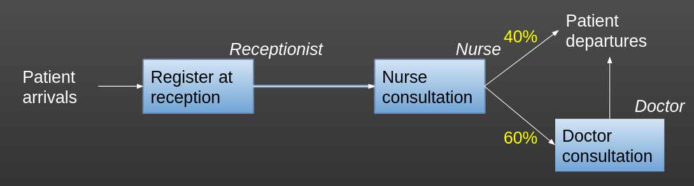

import simpy
import random
import pandas as pd
# Class to store global parameter values. We don't create an instance of this
# class - we just refer to the class blueprint itself to access the numbers
# inside.
class g:
patient_inter = 5
mean_reception_time = 2
mean_n_consult_time = 6
mean_d_consult_time = 20
number_of_receptionists = 1
number_of_nurses = 2
number_of_doctors = 2
number_of_cubicles = 5
prob_seeing_doctor = 0.6
sim_duration = 1200
number_of_runs = 10
# Class representing patients coming in to the clinic.
class Patient:
def __init__(self, p_id):
self.id = p_id
self.q_time_recep = 0
self.q_time_nurse = 0
self.q_time_doctor = 0
# Class representing our model of the clinic.
class Model:
# Constructor to set up the model for a run. We pass in a run number when
# we create a new model.
def __init__(self, run_number):
# Create a SimPy environment in which everything will live
self.env = simpy.Environment()
# Create a patient counter (which we'll use as a patient ID)
self.patient_counter = 0
# Create our resources
self.receptionist = simpy.Resource(self.env, capacity=g.number_of_receptionists)
self.nurse = simpy.Resource(self.env, capacity=g.number_of_nurses)
self.doctor = simpy.Resource(self.env, capacity=g.number_of_doctors)
self.cubicles = simpy.Resource(self.env, capacity=g.number_of_cubicles) ## NEW
# Store the passed in run number
self.run_number = run_number
# Create a new Pandas DataFrame that will store some results against
# the patient ID (which we'll use as the index).
self.results_df = pd.DataFrame()
self.results_df["Patient ID"] = [1]
self.results_df["Q Time Recep"] = [0.0]
self.results_df["Time with Recep"] = [0.0]
self.results_df["Q Time Nurse"] = [0.0]
self.results_df["Time with Nurse"] = [0.0]
self.results_df["Q Time Doctor"] = [0.0]
self.results_df["Time with Doctor"] = [0.0]
self.results_df.set_index("Patient ID", inplace=True)
# Create an attribute to store the mean queuing times across this run of
# the model
self.mean_q_time_recep = 0
self.mean_q_time_nurse = 0
self.mean_q_time_doctor = 0
# A generator function that represents the DES generator for patient
# arrivals
def generator_patient_arrivals(self):
# We use an infinite loop here to keep doing this indefinitely whilst
# the simulation runs
while True:
# Increment the patient counter by 1 (this means our first patient
# will have an ID of 1)
self.patient_counter += 1
# Create a new patient - an instance of the Patient Class we
# defined above. Remember, we pass in the ID when creating a
# patient - so here we pass the patient counter to use as the ID.
p = Patient(self.patient_counter)
# Tell SimPy to start up the attend_clinic generator function with
# this patient (the generator function that will model the
# patient's journey through the system)
self.env.process(self.attend_clinic(p))
# Randomly sample the time to the next patient arriving. Here, we
# sample from an exponential distribution (common for inter-arrival
# times), and pass in a lambda value of 1 / mean. The mean
# inter-arrival time is stored in the g class.
sampled_inter = random.expovariate(1.0 / g.patient_inter)
# Freeze this instance of this function in place until the
# inter-arrival time we sampled above has elapsed. Note - time in
# SimPy progresses in "Time Units", which can represent anything
# you like (just make sure you're consistent within the model)
yield self.env.timeout(sampled_inter)
# A generator function that represents the pathway for a patient going
# through the clinic.
# The patient object is passed in to the generator function so we can
# extract information from / record information to it
def attend_clinic(self, patient):
start_q_recep = self.env.now
with self.receptionist.request() as req:
yield req
end_q_recep = self.env.now
patient.q_time_recep = end_q_recep - start_q_recep
sampled_recep_act_time = random.expovariate(
1.0 / g.mean_reception_time
)
self.results_df.at[patient.id, "Q Time Recep"] = (
patient.q_time_recep
)
self.results_df.at[patient.id, "Time with Recep"] = (
sampled_recep_act_time
)
yield self.env.timeout(sampled_recep_act_time)
# Here's where the patient finishes with the receptionist, and starts
# queuing for the nurse
# NEW: They will also be queueing for a cubicle at this point.
# Record the time the patient started queuing for a nurse
start_q_nurse = self.env.now
start_q_cubicle = self.env.now
# NEW: As we are going to require the cubicle for the entire time period from
# here on, and won't release it until they exit the system, we will request
# the cubicle here and indent all of the existing code by one level.
with self.cubicle.request() as req:
yield req
# This code says request a nurse resource, and do all of the following
# block of code with that nurse resource held in place (and therefore
# not usable by another patient)
with self.nurse.request() as req:
# Freeze the function until the request for a nurse can be met.
# The patient is currently queuing.
yield req
# When we get to this bit of code, control has been passed back to
# the generator function, and therefore the request for a nurse has
# been met. We now have the nurse, and have stopped queuing, so we
# can record the current time as the time we finished queuing.
end_q_nurse = self.env.now
# Calculate the time this patient was queuing for the nurse, and
# record it in the patient's attribute for this.
patient.q_time_nurse = end_q_nurse - start_q_nurse
# Now we'll randomly sample the time this patient with the nurse.
# Here, we use an Exponential distribution for simplicity, but you
# would typically use a Log Normal distribution for a real model
# (we'll come back to that). As with sampling the inter-arrival
# times, we grab the mean from the g class, and pass in 1 / mean
# as the lambda value.
sampled_nurse_act_time = random.expovariate(1.0 /
g.mean_n_consult_time)
# Here we'll store the queuing time for the nurse and the sampled
# time to spend with the nurse in the results DataFrame against the
# ID for this patient. In real world models, you may not want to
# bother storing the sampled activity times - but as this is a
# simple model, we'll do it here.
# We use a handy property of pandas called .at, which works a bit
# like .loc. .at allows us to access (and therefore change) a
# particular cell in our DataFrame by providing the row and column.
# Here, we specify the row as the patient ID (the index), and the
# column for the value we want to update for that patient.
self.results_df.at[patient.id, "Q Time Nurse"] = (
patient.q_time_nurse)
self.results_df.at[patient.id, "Time with Nurse"] = (
sampled_nurse_act_time)
# Freeze this function in place for the activity time we sampled
# above. This is the patient spending time with the nurse.
yield self.env.timeout(sampled_nurse_act_time)
# When the time above elapses, the generator function will return
# here. As there's nothing more that we've written, the function
# will simply end. This is a sink. We could choose to add
# something here if we wanted to record something - e.g. a counter
# for number of patients that left, recording something about the
# patients that left at a particular sink etc.
# Conditional logic to see if patient goes on to see doctor
# We sample from the uniform distribution between 0 and 1. If the value
# is less than the probability of seeing a doctor (stored in g Class)
# then we say the patient sees a doctor.
# If not, this block of code won't be run and the patient will just
# leave the system (we could add in an else if we wanted a branching
# path to another activity instead)
if random.uniform(0,1) < g.prob_seeing_doctor:
start_q_doctor = self.env.now
with self.doctor.request() as req:
yield req
end_q_doctor = self.env.now
patient.q_time_doctor = end_q_doctor - start_q_doctor
sampled_doctor_act_time = random.expovariate(
1.0 / g.mean_d_consult_time
)
self.results_df.at[patient.id, "Q Time Doctor"] = (
patient.q_time_doctor
)
self.results_df.at[patient.id, "Time with Doctor"] = (
sampled_doctor_act_time
)
yield self.env.timeout(sampled_doctor_act_time)
# This method calculates results over a single run. Here we just calculate
# a mean, but in real world models you'd probably want to calculate more.
def calculate_run_results(self):
# Take the mean of the queuing times across patients in this run of the
# model.
self.mean_q_time_recep = self.results_df["Q Time Recep"].mean()
self.mean_q_time_nurse = self.results_df["Q Time Nurse"].mean()
self.mean_q_time_doctor = self.results_df["Q Time Doctor"].mean() ##NEW
# The run method starts up the DES entity generators, runs the simulation,
# and in turns calls anything we need to generate results for the run
def run(self):
# Start up our DES entity generators that create new patients. We've
# only got one in this model, but we'd need to do this for each one if
# we had multiple generators.
self.env.process(self.generator_patient_arrivals())
# Run the model for the duration specified in g class
self.env.run(until=g.sim_duration)
# Now the simulation run has finished, call the method that calculates
# run results
self.calculate_run_results()
# Print the run number with the patient-level results from this run of
# the model
print (f"Run Number {self.run_number}")
print (self.results_df)
# Class representing a Trial for our simulation - a batch of simulation runs.
class Trial:
# The constructor sets up a pandas dataframe that will store the key
# results from each run against run number, with run number as the index.
def __init__(self):
self.df_trial_results = pd.DataFrame()
self.df_trial_results["Run Number"] = [0]
self.df_trial_results["Mean Q Time Recep"] = [0.0]
self.df_trial_results["Mean Q Time Nurse"] = [0.0]
self.df_trial_results["Mean Q Time Doctor"] = [0.0]
self.df_trial_results.set_index("Run Number", inplace=True)
# Method to print out the results from the trial. In real world models,
# you'd likely save them as well as (or instead of) printing them
def print_trial_results(self):
print ("Trial Results")
print (self.df_trial_results)
# Method to run a trial
def run_trial(self):
# Run the simulation for the number of runs specified in g class.
# For each run, we create a new instance of the Model class and call its
# run method, which sets everything else in motion. Once the run has
# completed, we grab out the stored run results (just mean queuing time
# here) and store it against the run number in the trial results
# dataframe.
for run in range(g.number_of_runs):
my_model = Model(run)
my_model.run()
self.df_trial_results.loc[run] = [my_model.mean_q_time_recep,
my_model.mean_q_time_nurse,
my_model.mean_q_time_doctor]
# Once the trial (ie all runs) has completed, print the final results
self.print_trial_results()22 Requesting Multiple Resources Simultaneously
In your models, you may sometimes require multiple kinds of resources to be available for a single step.
For example, in an emergency department, you may need both a cubicle and a nurse to be available so a patient can be seen. Cubicles may be released slower than nurses if the patient in the cubicle is now waiting for a different step of their journey in the cubicle, such as having an x-ray, seeing a different type of practitioner, or waiting for a bed to become available within the hospital so they can be admitted.
Imagine this department is having problems seeing patients fast enough. They have 15 cubicles, and 8 nurses. They can either increase the number of nurses on shift to 9, or increase the capacity to 18 cubicles. Which should they do?
By setting up a model where we look at how both kinds of resources are used, we can begin to explore these questions.
22.1 Code example
Let’s return to our branching model from before.
Remember, in this, patients - see a receptionist - see a nurse - have a chance of going on to see a doctor

In the original version of the model, we assumed that there was always a room available for patients to be seen in. Maybe each nurse and doctor in this example clinic has their own designated room they are always in.
But let’s imagine the setup is slightly different - patients see a receptionist and go to a waiting area - once both a cubicle and a nurse are available, the patient is seen by a nurse - if the patient then needs to see a doctor (which, as before, only a certain % of patients will) then they will remain in the same cubicle while waiting for a doctor - the doctor will see them in the cubicle
The cubicle is released for the next patient after seeing the nurse IF the patient leaves at this point. Otherwise, it will be released after seeing the doctor.